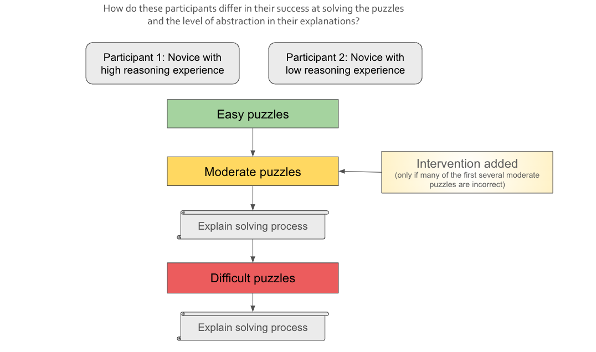

How do people algorithmically tackle hard problems and develop generalizable principles from individual problem instances? When faced with a novel situation or task, many humans are able to formulate abstract principles that are useful to guide problem solving. The strength of this ability varies between individuals. Previous studies have investigated the role of self-explanation in understanding a novel task or phenomenon. One aspect of self-explanation that has been identified as a possible source of utility is the learner's generation of an explicit abstract principle that can then be applied to future situations or problems. I am interested in each of these factors (self explanation and reasoning experience) separately, as well as their interaction. Existing research on self-explanation has shown its importance, but the question of how exactly it helps in understanding remains open, with explicit abstract principle generation being one possible way that it contributes to understanding. My research questions are:
RQ1: When people learn to solve a novel task, do they formulate explicit principles during their learning of it?RQ2: Does prior formal reasoning experience influence the ability to learn a novel task and the ability to formulate these explicit principles?
To investigate these questions, I am working with Jay McClelland in the Parallel Distributed Processing lab to examine how people learn and understand a problem-solving task that is new to them. Our experiment arises from observations in Nam and McClelland's recent investigation of participants' learning of a particular strategy in Sudoku, a popular puzzle game (Nam & McClelland, 2021). Their study as well as our current one both examine participants' learning of the Hidden Single strategy, which is a Sudoku solving technique that can be applied to certain partially-filled grids. A Sudoku player can use the Hidden Single strategy to identify a digit that must go in a particular cell of the grid when specific conditions of known and unknown digits in the rows, columns, and boxes are met. In our experiment, Sudoku-naive participants on the Prolific platform (a human subject pool similar to Mechanical Turk) are given a series of increasingly difficult Sudoku grids with sufficiently many digits to constrain a highlighted cell, and asked to fill it in with the correct digit. We provide unlimited attempts for each puzzle and feedback of correctness only, with no explanation or further instructions. Participants can use their feedback from each puzzle to learn the constraints of Sudoku, and apply these constraints to the progressively harder puzzles. We then ask them to explain their solving process in a series of carefully designed questions. We plan to analyze whether their explanations contained instance-specific references (e.g. "I knew that it couldn't be a 7 because there was another 7 in the row") or generalizable, abstract references (e.g. "I knew it couldn't be any digit that was already in the row, column, or 3x3 box"). To develop the puzzle sequence and questions, we carefully consider the scaffolding of constraints learned in each puzzle with the goal of observing how rule-like principles might emerge. We hypothesize that participants with more formal education will correctly solve more puzzles, and be more inclined and better able to create abstract explanations.